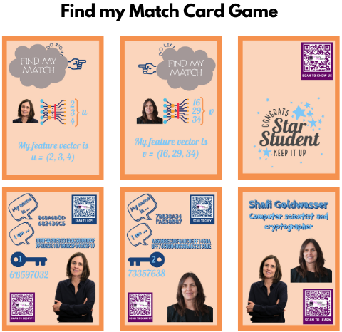

Research
My research focuses on making AI technologies trustworthy and secure by preserving user privacy and protecting the intellectual property (IP) of models. I integrate advanced machine learning and applied cryptography to develop scalable, privacy-preserving solutions that build trust for both users and model owners.
|
|
|
Practical Biometric Search under Encryption: Meeting the NIST Runtime Requirement without Loss of Accuracy
Amina Bassit, Florian Hahn, Raymond Veldhuis, Andreas Peter
IEEE T-BIOM, 2025
Encrypted biometric search at scale becomes practical with FHE supporting SIMD and vertical chunking on the database, enabling accurate one-in-a-million search in under 10 seconds.
|
|
|
Template Recovery Attack on Encrypted Face Recognition Systems with Unprotected Decision using Synthetic Faces
Amina Bassit, Florian Hahn, Zohra Rezgui, Hatef Otroshi Shahreza, Raymond Veldhuis, Andreas Peter
Frontiers in Imaging, 2025
Even HE-based BTPs cannot hide from synthetic spoofs—this study shows how attackers can recover and reconstruct facial templates using only synthetic faces and a handful of comparison scores.
|
|
|
A Study on the Next Generation of Digital Travel Credentials
Ana-Teodora Radutoiu, Amina Bassit, Raymond Veldhuis, Christoph Busch
IEEE BIOSIG, 2024
Future digital travel credentials—tomorrow's passports—can be secured using iris biometrics, enabling clone-resistant, device-portable authentication for seamless and secure travel.
|
|
|
Improved Multiplication-Free Biometric Recognition under Encryption
Amina Bassit, Florian Hahn, Raymond Veldhuis, Andreas Peter
IEEE TBIOM, 2024
By turning similarity computations into lookup tables, we unlock fast and secure biometric recognition under encryption without multiplications, achieving decisions in under 50ms.
|
|
|
Fast and Accurate Biometric Search Under Encryption
Amina Bassit
PhD Thesis - Dec 15th, 2023 - University of Twente
Lookup table-based comparisons turn biometric verification and search under encryption into milliseconds and seconds instead of minutes and hours, enabling real-world deployment of privacy-preserving biometrics without accuracy loss.
Supervised by Raymond Veldhuis, Andreas Peter, and Florian Hahn
Funded by the PriMa (Privacy Matters) project under the Marie Skłodowska-Curie grant No. 860315
EAB Industry Award 2024
Filled Patented jointly with the UT, Application number: NL2024050496
|
|
|
Template Recovery Attack on Homomorphically Encrypted Biometric Recognition Systems with Unprotected Threshold Comparison
Amina Bassit, Florian Hahn, Zohra Rezgui, Una Kelly, Raymond Veldhuis, Andreas Peter
IEEE IJCB, 2023
Revealing comparison scores compromises BTPs' privacy. Our attack shows that a handful of fake templates and cleartext scores are enough to fully recover protected biometric templates and reconstruct raw biometric samples.
|
|
|
Remote Cancelable Biometric System for Verification and Identification Applications
Hatef Otroshi Shahreza, Amina Bassit, Sébastien Marcel, Raymond Veldhuis
IEEE BIOSIG, 2023
Dynamic protection meets cancelable biometrics. Our protocol enables secure, user-specific template replacement in both identification and verification without sacrificing flexibility or privacy.
|
|
|
Multiplication-Free Biometric Recognition for Faster Processing under Encryption
Amina Bassit, Florian Hahn, Raymond Veldhuis, Andreas Peter
IEEE IJCB, 2022
Multiplications out, lookup tables in! Our approach accelerates biometric verification under encryption without compromising recognition accuracy.
Filled Patent jointly with the UT
|
|
|
Hybrid Biometric Template Protection: Resolving the Agony of Choice Between Bloom Filters and Homomorphic Encryption
Amina Bassit, Florian Hahn, Raymond Veldhuis, Andreas Peter
IET Biometrics, 2022
Unlinkability meets efficiency! Our hybrid scheme blends Bloom filters with homomorphic encryption to deliver fast, accurate, and privacy-preserving iris recognition.
|
|
|
Transferability analysis of adversarial attacks on gender classification to face recognition: Fixed and variable attack perturbation
Zohra Rezgui, Amina Bassit, Raymond Veldhuis
IET Biometrics, 2022
Adversarial attacks reimagined! We show that fast, fixed-magnitude perturbations on gender classifiers can stealthily transfer to face recognition—unlocking a new path to soft biometric privacy without sacrificing identity utility.
|
|
|
Fast and Accurate Likelihood Ratio-Based Biometric Verification Secure Against Malicious Adversaries
Amina Bassit, Florian Hahn, Joep Peeters, Tom Kevenaar, Raymond Veldhuis, Andreas Peter
IEEE TIFS, 2021
Honest-but-curious isn't enough for biometric recognition. Our solution resists malicious adversaries by combining homomorphic encryption with zero-knowledge proofs, delivering fast, accurate biometric verification without leakage.
|
|
|
Bloom Filter vs Homomorphic Encryption: Which approach protects the biometric data and satisfies ISO/IEC 24745?
Amina Bassit, Florian Hahn, Chris Zeinstra, Raymond Veldhuis, Andreas Peter
IEEE BIOSIG, 2021
Not all protections are standard-proof. Our analysis reveals that only homomorphic encryption with verifiable computation satisfies ISO/IEC 24745 in trustless settings—while Bloom filters fall short on key privacy guarantees.
Best Paper Award
|
|
|
Transferability analysis of an adversarial attack on gender classification to face recognition
Zohra Rezgui, Amina Bassit
IEEE BIOSIG, 2021
Task boundaries don't prevent adversarial transfer. Our analysis shows that attacks on gender classification can fool face recognition models, exposing cross-task vulnerabilities in shared biometric pipelines.
|
|
Tutorials
|
Computer Vision over Homomorphically Encrypted Data (CVPR 2025)
Biometric Privacy and Security (IJCB 2024)
|
|
Talks
|
Privacy-Preserving Biometrics - Youverse Tech Talk 2023
Fast and accurate biometric search under encryption - EAB-RPC 2023
Lookup-tabularized biometric recognition under encryption - NBLAW 2023
Resolving the agony of choice between BF and HE - EAB Lunch Talk 2022
Integration of biometric recognition and homomorphic encryption - EAB-RPC 2020
|
|
Blogs
|
A Reflection on Privacy, Security, and Anonymity in the Context of Biometrics
Hello, device! Can you recognize me without violating my privacy?
|
|
Services
|
Program Chair, IWBF 2025
Co-organizer Special Session: Trustworthy Biometrics, EUSIPCO 2025
Journal Reviewer at IEEE TIFS, IEEE T-BIOM, IJIS, VCJ
Conference Reviewer at PoPETs, BIOSIG, IJCB, IWBF
|
|
Teaching
|
Bachelor project co-supervision, “A Study on the Next Generation of Digital Travel Credentials” by A. Radutoiu - UT, TUD, and NTNU, 2024
Master thesis co-supervision, “Private Information Retrieval applied to Biometric Verification” by Martijn P. de Vries - UT, 2022
Secure Data Management (192110940), Master course (5 EC), from 2019 to 2023
|
|
Youth Research Engagement
|
UT Girls Day 2023
I participated in the Girls Day 2023 at the University of Twente, an event that aims to inspire young girls to pursue scientific careers. Together with Zohra Rezgui, we, as early-stage researchers from the PriMa project, invented a card game called Find my Match that teaches young girls the basics of face recognition and encryption.

|
|
{kind=link}